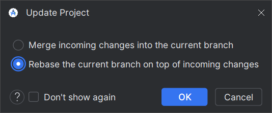

Git: Ветки и версионирование
Ветки (branch) - очень мощный инструмент в Git.
Они позволяют разделять и соединять между собой разные направления разработки:
стабильную версию, новые идеи/наработки, исправления багов.
1. Типы веток
-
master- Стабильная версия (Release). В этой ветке содержатся только коммиты, прошедшие экспертизу и проверенные на железе. -
develop- Ветка для разработки (Beta). В этой ветке ведется большая часть разработки. Должна основываться наmaster(содержать в себе все коммиты оттуда). При внесении изменений вmasterони должны быть перенесены в началоdevelopчерез git rebase. По завершении работы коммиты изdevelopпереносятся вmasterпутем открытия Pull Request
NB: Не смотря на то, что этоdevelop, программный код должен проверяться и соответствовать правилам оформления. -
Экспериментальные ветки (Experimental/Feature). Содержат в себе экспериментальные изменения, пока не достойные основных веток. Основывается на
develop, по завершении работы переносится вdevelopи закрывается.
До закрытия ветки особых требований к программному коду нет.
2. Cлияние веток
Git предполагает два типа слияния веток: Merge и Rebase
Предположим, у нас есть основная ветка main и ветка
feature, которая начинается от коммита B, в которой мы работаем.
A---B---C---D (main-ветка)
\
E---F---G (feature-ветка)
Пока мы работали над feature, ветка main ушла вперед. Там содержатся очень
важные изменения, которые мы хотим иметь в своей ветке.
Merge
git checkout feature # Перейти в ветку feature
git merge master # Сделать merge master в рабочую ветку
git merge master применит изменения, сделанные в ветке master с тех пор, как
она начала отличаться от feature (то есть коммиты C, D), поверх ветки
feature. Это приведет к появлению нового коммита H, объединяющего две ветки:
A---B-----C-----D (main-ветка)
\ \
E---F---G---H (feature-ветка)
Достоинства:
- Мы совершили слияние двух веток, не меняя историю в прошлом.
Это означает, что merge - более безопасная операция, которая не испортит жизнь другим людям, работающим над той веток, потому что не меняет историю.
Недостатки:
- Создается лишний коммит, по сути не несущий в себе новой информации
- Если ветки сильно отличаются и при слиянии возникли конфликты, то их
придется разрешать все сразу.
Это означает, что merge может усложнить историю, а процесс слияния веток становится менее интуитивным.
Rebase
git checkout feature # Перейти в ветку feature
git rebase master # Сделать rebase рабочей ветки поверх master
git rebase master выкинет все коммиты в ветке feature (E, F, G) с тех пор,
как она ушла от ветки master (коммит B) и вновь применит их поверх
конца ветки master (коммит D). В итоге ветка feature будет выглядеть, как будто
её начали не от коммита B, а от коммита D. Мы подменили основание ветки.
A---B---C---D (main-ветка)
\
E*---F*---G* (feature-ветка)
Обратите внимание, что коммиты (E, F, G) и (E*, F*, G*) - не то же самое!
У них разное основание, а, может, и содержание.
Достоинства:
- История более линейная. Мы забыли, что ветка
featureкогда-то основывалась наB. - Не порождаются новые коммиты
- Если возникают конфликты при слиянии, то они будут разрешаться по очереди, редактируя
каждый коммит (
E,F,G) по отдельности.
Это означает, что rebase позволяет иметь более прозрачную и читаемую историю.
Недостатки:
* Мы меняем историю! Если кто-то другой работал с веткой feature, пока мы сделали
её rebase, то это приведет к проблемам, так как у другого человека в рабочем пространстве
будут коммиты, которых теперь не существует
* Мы меняем историю! И редактируем все коммиты в истории. Если быть неаккуратным,
то можно потерять какой-нибудь коммит
* Могут возникнуть проблемы с тем, что бы запушить ветку после rebase. Чаще всего мы двигаем
историю вперед, а право на изменение истории в прошлом есть только у администраторов.
для этого используется git push --force.
Это означает, что rebase - опасная операция, которая может испортить историю и создать
проблемы, если над одной веткой работают несколько человек
Какой тип слияния выбрать?
Rebase
- Когда нужна более чистая и читаемая история
- Когда необходимо изменить историю задним числом
- Когда нужно синхронизировать рабочую ветку с изменениями, произошедшими в основной ветке.
Идеально подходит для веток, над которой работает один человек. В том числе для
слияния удаленной ветки в локальную (например origin/develop в develop).
Merge
- Когда изменение истории недопустимо
- Когда нужна более детализированная история
- Когда необходимо применить изменения из рабочей ветки в основную
Идеально подходит для веток, с которой работают сразу несколько человек.
3. Правила работы с ветками
-
Недопустимо использовать merge для слияния удаленных веток (
remote) в локальные. В таких случаях необходимо использовать rebase  -
Ветка
master- главная. Изменения в ней появляются только в результате слияния с другой веткой через pull request. Коммиты напрямую вmasterнедопустимы. -
Каждый merge в ветку
master- выпуск новой версии. -
От ветки
developдопускается создаватьfeature-ветки, под конкретные задачи. -
Название
feature-ветки должно соответствовать задаче, которую она решает. -
Над
feature-веткой одновременно работает только один человек. -
В конце работы над
featureона сливается сdevelopчерез pull request. После этого ветка закрывается. -
Перед слиянием ветки
Bв веткуAветкаBдолжна содержать в себе все коммиты изA. Таким образом, слияние веток можно осуществить посредством т.н. fast-forward merge, когда коммиты изBлинейно применяются кА:
---A main (A)
\
B feature (B)
После слияния:
---A---B main (A)
4. Версионирование
Предлагается следующая схема версионирования:
v<Мажорная версия>.<Минорная версия>
-
Каждый раз, когда вносятся изменения в
master, номер версии увеличивается. -
К каждому существенному мероприятию (начало сезона, встреча, сорвенования), должна быть готова новая Мажорная версия
-
Версия может увеличиваться и между мероприятиями. В таком случае выходит Минорная версия
-
Первая версия -
v0.0